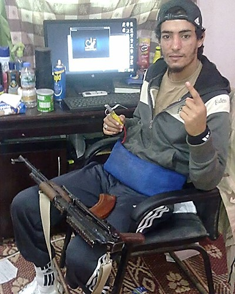
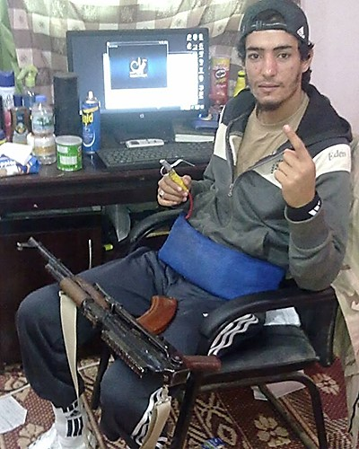

The Path Taken
Alessandria Masi and Hanna Sender, “How Foreign Fighters Joining ISIS Travel To The Islamic State Group’s ‘Caliphate,’” International Business Times, March 3, 2015, http://www.ibtimes.com/how-foreign-fighters-joining-isis-travel-islamic-state-groups-caliphate-1833812.
Hazem Al-Amin, “Tunisia’s 'Road to Jihad' in Syria Paved by Muslim Brotherhood,” Al Monitor, October 23, 2013, http://www.al-monitor.com/pulse/security/2013/10/tunisia-jihadists-syria-brotherhood-ennahda.html#ixzz3xFVAgEHH.
Hazem Al-Amin, “Who is the 'typical' Tunisian jihadist?” Al Monitor, November 3, 2014, http://www.al-monitor.com/pulse/security/2014/11/tunisian-jihadis-profile-fighting-syria.html.
“Irregular Migration between West Africa, North Africa, and the Mediterranean,” Altai Consulting for IOM Nigeria, December 2015, http://www.altaiconsulting.com/docs/migration/Altai_Consulting_Free_Movement_and_Migration_in_West_Africa.pdf.
“IS Fighters and Supporters Dispute Prioritizing Migration to Syria or Libya,” SITE Intelligence Group, September 24, 2015, https://news.siteintelgroup.com/Jihadist-News/is-fighters-and-supporters-dispute-prioritizing-migration-to-syria-or-libya.html.
“ISIS in Libya: a Major Regional and International Threat,” The Meir Amit Intelligence and Terrorism Information Center at the Israeli Intelligence Heritage and Commemoration Center, January 2016, http://www.terrorism-info.org.il/en/article/20943.
Mirco Keilberth, Juliane von Mittelstaedt, and Christoph Reuter, “The 'Caliphate's' Colonies: Islamic State's Gradual Expansion into North Africa,” Der Spiegel, November 18, 2014, http://www.spiegel.de/international/world/islamic-state-expanding-into-north-africa-a-1003525.html.
Moncef Kartas, “On the Edge? Trafficking and Insecurity at the Tunisia-Libyan Border,” Small Arms Survey, Working Paper 17, December 2013, http://www.smallarmssurvey.org/fileadmin/docs/F-Working-papers/SAS-WP17-Tunisia-On-the-Edge.pdf.
Nesrine Hamedi, “Tunisian Jihadists Fighting in Syria,” Al Monitor, March 24, 2013, http://www.al-monitor.com/pulse/originals/2013/03/tunisian-jihadists-syria.html.
Office of the United Nations High Commissioner for Human Rights (OHCHR), “Preliminary findings by the United Nations Working Group on the use of mercenaries on its official visit to Tunisia – 1 to 8 July, 2015,”July 2015, http://www.ohchr.org/EN/NewsEvents/Pages/DisplayNews.aspx?NewsID=16219&LangID=E.
Patrick Markey and Ahmed Elumami, “Islamic State in Libya fights to emulate Iraq, Syria success,” Reuters, November 13, 2015, http://www.reuters.com/article/us-libya-security-insight-idUSKCN0T20J520151113.
“There and Back: Trajectories of North African Fighters in Syria,” Small Arms Survey, Security Assessment in North Africa Issue Brief Number 3, July 2015, http://www.smallarmssurvey.org/fileadmin/docs/G-Issue-briefs/SAS-SANA-IB3-Foreign-Fighters.pdf.
“Tunisia builds anti-terror barrier along Libya border,” BBC News, February 7, 2016, http://www.bbc.com/news/world-africa-35515229.
United Nations Security Council, Final report of the Panel of Experts on Libya established pursuant to resolution 1973 (2011), March 9, 2016, http://www.un.org/ga/search/view_doc.asp?symbol=S/2016/209.
United Nations Security Council, Report of the Analytical Support and Sanctions Monitoring
Team submitted pursuant to paragraph 13 of Security Council resolution 2214 (2015) concerning the terrorism threat in Libya posed by the Islamic State in Iraq and the Levant, Ansar al Charia, and all other Al-Qaida associates, November 19, 2015, accessed via http://i2.cdn.turner.com/cnn/2015/images/12/01/mt.report.on.libya-.eng.pdf.
Biographies of Tunisian Fighters
Walid Abdaoui
“Abou Haydar Ettounsi alias Khaled Abdaoui, l’égorgeur tunisien de Daêch,” Kapitalis, March 12, 201, http://www.kapitalis.com/societe/28129-abou-haydar-ettounsi-alias-khaled-abdaoui-l-egorgeur-tunisien-de-daech.html
“Al-Qairouan: janazah ramziyah lil shab Walid Abdaoui wasat halat ghadab min zahirat istiqtab al-shabab lil qital.” [Kairouan: symbolic funeral for the young man Walid Abdaoui amid anger over the phenomenon of youth recruitment to fight] Nessma TV, November 26, 2014, https://www.youtube.com/watch?v=aPj0NB1qYFk.
“Ben Ali au chevet de Mohamed Bouazizi, au centre de traumatologie et des grands brûlés,” Leaders, December 28, 2010, http://www.leaders.com.tn/article/3531-ben-ali-au-chevet-de-mohamed-bouazizi-au-centre-de-traumatologie-et-des-grands-brules.
Charlotte Bozonnet, “’Ce n’est pas la pauvreté qui pousse les jeunes Tunisiens à partir au djihad,’” Le Monde, March 18 2015, http://www.lemonde.fr/international/article/2014/10/25/il-m-a-dit-qu-il-ne-rentrerait-pas-qu-il-ne-rentrerait-jamais_4512366_3210.html.
Mabrouka Khedir, “Recrutement des jeunes pour le djihad : La passivité de l’État tunisien,” Inkyfada, November 13, 2014. https://inkyfada.com/2014/11/recrutement-jeunes-djihad-passivite-etat-tunisie/.
“Walid Abdaoui: Cadre médical en Tunisie, kamikaze en Libye,” Kapitalis, November 26, 2014, http://www.kapitalis.com/societe/26007-walid-abdaoui-cadre-medical-en-tunisie-kamikaze-en-libye.html.
Ahmed Abdel Majed Belchahed
Frédéric Bobin, “La Tunisie, une autre victime du retour à domicile de djihadistes,” Le Monde, November 19, 2015, http://www.lemonde.fr/m-actu/article/2015/11/19/la-tunisie-une-autre-victime-du-retour-a-domicile-de-djihadistes_4812926_4497186.html.
Permanent Representative of the Syrian Arab Republic to the United Nations, Identical letters dated 19 October 2012 from the Permanent Representative of the Syrian Arab Republic to the United Nations addressed to the Secretary-General and the President of the Security Council, October 23 2012, http://dag.un.org/handle/11176/17691.
“Réouverture du consulat de Tunisie à Damas,” Mosaique FM, April 9, 2015, http://archivev2.mosaiquefm.net/fr/index/a/ActuDetail/Element/56859-reouverture-du-consulat-de-tunisie-a-damas?Source=RSS.
Sarah Souli, “Tunisia: Why foreign fighters abandon ISIL,” Al Jazeera, March 3, 2016, http://www.aljazeera.com/news/2016/03/tunisia-foreign-fighters-abandon-isil-160301103627220.html.
“Sarkhat a’ilayt 43 Tunisiyin masjunin bi Suriyah” [Cry of the families of 43 Tunisians imprisoned in Syria], Attounisia, November 10, 2013, http://www.attounissia.com.tn/details_article.php?t=42&a=102588.
Tarek Amara, “Tunisia ‘to withdraw recognition’ of Syria government,” Reuters, February 4, 2012, http://www.reuters.com/article/us-syria-tunisia-flag-idUSTRE8130IF20120204.
“Tunisia restoring diplomatic relations with Syria,” Agence France Presse, April 2, 2015, https://www.yahoo.com/news/tunisia-restores-diplomatic-relations-syria-122225312.html.
Tariq Al-Harzi
Charles Lister, “Islamic State Senior Leadership: Who’s Who,” Brookings Institution, December 1, 2014, http://www.brookings.edu/research/reports2/2014/12/profiling-islamic-state-lister/.
Dion Nissenbaum, “U.S. Drone Strike Kills Another Senior Islamic State Militant,” Wall Street Journal, April 2, 2015, http://www.wsj.com/articles/u-s-drone-strike-kills-another-senior-islamic-state-militant-1435870452.
Suadad Al-Salhy, “Al Qaeda says it freed 500 inmates in Iraq jail-break,” Reuters, July 23, 2015. http://www.reuters.com/article/us-iraq-violence-alqaeda-idUSBRE96M0C720130723
Timothy Holman, “The French Jihadist ‘Foreign Legion’ in Syria and Iraq,” Jamestown Foundation, Terrorism Monitor Volume 13, Issue 15. July 24, 2015, http://www.jamestown.org/programs/tm/single/?tx_ttnews%5Btt_news%5D=44202&cHash=fd9f774274deeafa057080d3043a0b72#.Vv6_PfkrJpg.
United States Department of Defense, “U.S. Airstrike Kills Person of Interest in Benghazi Attack,” June 22, 2015, http://www.defense.gov/News-Article-View/Article/604864.
U.S. Department of State, “Wanted: Information that brings to justice…Tariq Bin-al-Tahar Bin al Falih al-‘Awni al-Harzi,” Rewards for Justice, https://www.rewardsforjustice.net/english/tariq_al_harzi.html.
U.S. Department of the Treasury, “Treasury Designates Twelve Foreign Terrorist Fighter Facilitators,” September 26, 2014, https://www.treasury.gov/press-center/press-releases/Pages/jl2651.aspx.
United Nations Security Council, Committee Pursuant to Resolutions 1267 (1999) 1989 (2011) and 2253 (2015) Concerning ISIL (Da`esh) Al-Qaida and Associated Individuals Groups and Undertakings, “Narrative Summaries for Reasons for Listing: Tarak Ben Taher Ben Faleh Ouni Harzi,” April 10, 2015, https://www.un.org/sc/suborg/en/sanctions/1267/aq_sanctions_list/summaries/individual/tarak-ben-taher-ben-faleh-ouni-harzi.
Yasmine Ryan, “The Benghazi link to Tunisia’s assassinations.” Al Jazeera. September 13, 2015. http://america.aljazeera.com/articles/2013/9/13/the-benghazi-linktotunisiasassassinations.html.
Kamel Zarrouk
Bill Roggio, “Ansar al Sharia Tunisia deputy leader reportedly in Syria,” Long War Journal, February 27, 2014, http://www.longwarjournal.org/archives/2014/02/ansar_al_sharia_tuni_7.php.
Frida Dahmani, “Tunisie : jihad au féminin,” Jeune Afrique, December 1, 2015, http://www.jeuneafrique.com/mag/280611/politique/tunisie-jihad-feminin/.
Gilad Shiloach, “ISIS Supporters Claim Prominent Preacher Killed By U.S Airstrike,” Vocativ, October 18, 2015, http://www.vocativ.com/news/240690/isis-supporters-prominent-preacher/.
“Hisabat ‘da’eshiyah: maqtal Kamel Zarrouk fi Suriyah” [Daesh accounts: Kamel Zarrouk killed in Syria]
Assabah News, June 12, 2015, http://bit.ly/27GQDIn.
“Kamel Zarrouk d'Ansar Achariaa ne se trouvait pas à la mosquée de l'Ariana,” Mosaique FM, March 1, 2014, http://archivev2.mosaiquefm.net/fr/index/a/ActuDetail/Element/30975-kamel-zarrouk-d-ansar-achariaa-ne-se-trouvait-pas-a-la-mosquee-d-ariana.
“Masadir salafiyah tu’akid wusul al-rajul al-thani fi tandhim Ansar al-Shari`a ‘Kamel Zarrouk’ fi al-aradi al-suriyah” [Salafi sources confim the arrival of the second-in-command of the Ansar al Shari`a organization, Kamel Zarrouk, in Syrian territory,” Attounisia, February 13, 2014, http://www.attounissia.com.tn/details_article.php?t=42&a=113544.
Mathieu Galtier, “Une nouvelle guerre en Libye est-elle à venir?” Le Journal du Dimanche, June 8, 2014, http://www.lejdd.fr/International/Afrique/Une-nouvelle-guerre-en-Libye-est-elle-a-venir-670778.
Mischa Benoit-Lavelle, “Tunisia Considers Crackdown on Radical Preachers,” Al Monitor, May 10, 2013, http://www.al-monitor.com/pulse/fr/contents/articles/opinion/2013/05/tunisia-terrorist-crackdown.html.
Raouf Ben Hédi “Discours d’un salafiste aux abois : quittez la Tunisie, venez au Chem!” Business News, August 7, 2014, http://www.businessnews.com.tn/discours-dun-salafiste-aux-abois--quittez-la-tunisie-venez-au-chem-,519,48546,3.
“Speech by Sheikh Kamel Zarrouk in the tent of Manouba Mosque,” (Arabic), YouTube, uploaded December 6, 2012, https://www.youtube.com/watch?v=HwUf1x7fAWQ&sns=tw.
“Tunisie-Ariana: La police n’arrive pas à mettre la main sur Kamel Zarrouk,” Tunisie Numerique, January 3, 2014, http://www.tunisienumerique.com/tunisie-ariana-la-police-narrive-pas-a-mettre-la-main-sur-kamel-zarrouk/206832.
Yasm Najjar, “North Africa: Maghreb to Tighten Noose On Syria-Bound Jihadists,” Magharebia, February 26, 2014, accessed via http://allafrica.com/stories/201402270971.html.
Yasm Najjar, “Tunisia Vows to Protect Journalists,” Magharebia, January 13, 2015, accessed via http://allafrica.com/stories/201501140268.html.
Z.A., “Tunisie-Terrorisme: Le cheikh salafiste Kamel Zarrouk échappe à la police,” Kapitalis, September 14, 2013, http://www.kapitalis.com/societe/18173-tunisie-terrorisme-le-cheikh-salafiste-kamel-zarrouk-echappe-a-la-police.html.
Z.A., “Kamel Zarrouk appelle à «combattre le gouvernement tunisien mécréant (audio),” Kapitalis, October 30, 2014, http://www.kapitalis.com/societe/25487-kamel-zarrouk-appelle-a-combattre-le-gouvernement-tunisien-mecreant.html.
“Zawjat al-irhabi Kamel Zarrouk tu’alin maqtalihi fi Suriyah” [The wife of the terrorist Kamel Zarrouk announces his death in Syria] Jomhouria, October 19, 2015, http://bit.ly/20ehYw2.

 
